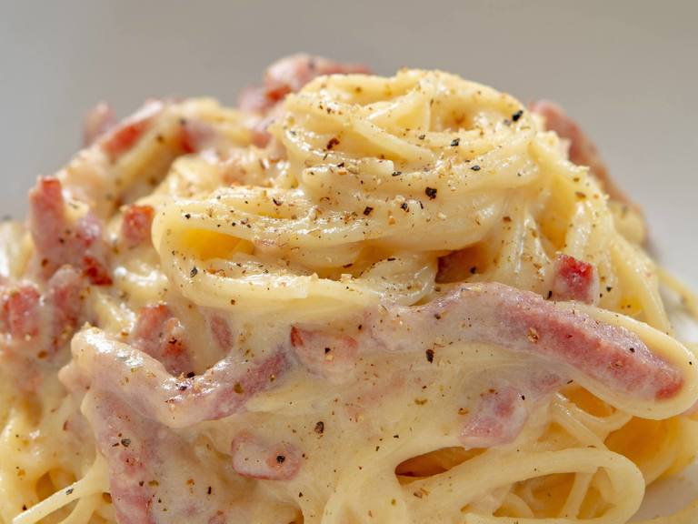
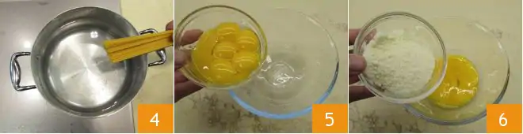
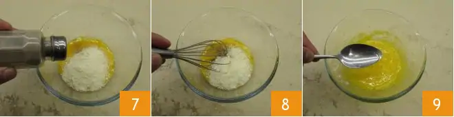
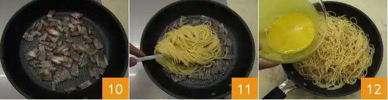
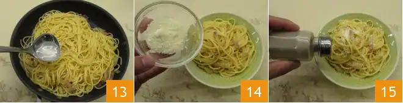

Mighty Odin the legendary chef, brings us Spaghetti Carbonara—a divine Italian delight. Al dente spaghetti meets a creamy sauce of eggs, Pecorino Romano cheese, and crispy guanciale. The result? An enchanting blend of savory, smoky flavors that captivate all who taste it. A true masterpiece of Odin's culinary prowess.
To prepare spaghetti carbonara start by putting a pot of salted water on the burner to cook the pasta. In the meantime, remove the pork rind from the guanciale (1) and cut it first into slices and then into strips about 1/2" (1cm) (2) thick. The removed rind can be reused to flavor other things. Put the pieces into a non-stick pan (3) and brown for about 15 minutes over medium heat, being careful not to burn it or it will smell too strong.
Meanwhile, put spaghetti in boiling water (4) and cook for the time indicated on the package. In the meantime, pour the yolks into a bowl (5), add most of the Pecorino cheese needed for the recipe and the remaining part will be used just before serving.
Season with black pepper (7) and whip by hand (8). Add a tablespoon of cooking water to dilute the mixture and stir (9).
In the meantime the guanciale will be cooked, turn off the burner and set it aside (10) . Drain the pasta al dente directly into the pan with the guanciale (11) and stir it briefly to season it. Remove from heat and pour the mixture of eggs and pecorino cheese (12)into the pan. Mix quickly to combine.
To make it very creamy, if necessary, you can add a little cooking water to your pasta (13) . Serve spaghetti carbonara immediately with the remaining pecorino cheese (14) and ground black pepper (15) on top.
We recommend eating spaghetti carbonara away. No type of storage is recommended.
What can you add to spaghetti carbonara? First of all, respecting your taste in the kitchen is always very important! If you're still not sure, here are some very good alternatives. For example, as an alternative to spaghetti you can also use rigatoni or mezze maniche pasta, and instead of the guanciale, try bacon strips with oil or butter. Or replace the pecorino cheese or mix it with grated parmesan cheese. And finally, to make your carbonara even more creamier, there will be no need to add cream! You can simply add a little cooking water to the pasta or use a combination of whole eggs and yolks: try to find the consistency you prefer! We used spaghetti No. 3, but you can also try spaghetti No. 5 and Spaghettoni pasta!
Check out the full Recipes